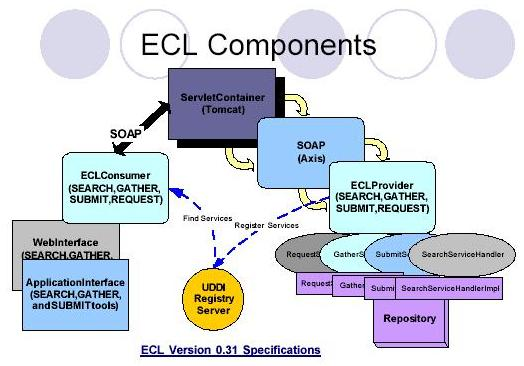

|
|
ECL
EduSource Communication Language
A language is a human
communication protocol, which allows two or more people to understand
each other. EduSource Communication Language (ECL) protocol is the
language for all eduSource members connected to a heterogeneous
network. It consists of institution repositories, peer-topeer network,
individual small repositories, and application interfaces. The
institution repositories such Explora, Aloha,
and Careo are stable eduSource members. Typically, the institution
repositories have known URL and Web servers running at all times. These
repositories already offer their services through their own protocol
either via HTTP or XMLRPC requests. ECL protocol enables these
repositories to communicate with each other and enables other
repositories and services to become a part of eduSource. The protocol
is independent from any existing protocols and enables developers to
build universal tools and services that will enable their users to
connect and use services provided by any repository connected to the
eduSource network.
The ECL implements the IMS Digital
Repository Interoperability specification. lt follows closely IMS DRI
and models its messaging protocol according to IMS DRI general
messaging model.
Since the complexity of the ECL
protocol might be detrimental to its adoption, an eduSource connector
which implements the ECL protocol is provided. The connector provides a
standard API to connect existing repository to the eduSource network.
ECL protocol requires institution repositories or tools to implement
connector handlers only for those services they want to expose to
others (Figure 2), which is a far simpler than implementing and
deploying every service in each institution. The
connector also facilitates version synchronization during the protocol
evolution. Changes in the protocol itself rarely propagate to the API
level. In most cases, repositories do not have
to worry about the change in the protocol, they only need to update the
connector with a never version. Changes in the ECL protocol are
detected by the newer version of the connector and are dealt with
automatically.
| ECL Service
Description |
|
| Search |
Search is a SOAP service
implemented at service provider (server) computers. As recommended by
IMS DRI, ECL protocol uses XQuery. To enable connection of the
repositories that do not support (full) XQuery a set of XQuery
templates is used. The repositories register
their Search Service with an indication of supported templates or full
XQuery search capability.
|
| Expose |
Expose is a SOAP service
implemented on client computers. When asynchronous messaging is
required, this service will be called by service providers to return
the responses for search, gather, and alert.
|
| Submit |
Submit is a SOAP service
implemented at service provider (server) computers. It is a function
for moving an object (metadata and learning object) to a repository.
Clients can make request to this service to determine the type of
transfer protocol. The transfer protocol can be a successive SOAP
request to upload the object or FTP transfer protocol.
|
| Store |
Store is a SOAP service
implemented on client computers. When asynchronous messaging is
required, this service is called by service providers to return the
results of submit function.
Request is a SOAP service
implemented at service provider (server) computers. It provides a
function to ask to deliver objects to a client. The transfer protocol
could be a successive SOAP request to download the object or FTP
transfer protocol.
|
| Request |
Request Request is a SOAP
service implemented at service provider (server) computers. It provides
afunction to ask to deliver objects to a client. The transfer protocol
could be a successive SOAP request to download the object or FTP
transfer protocol.
|
| Deliver |
Deliver is a SOAP service
implemented on client computers. When asynchronous messaging is
required, this service will be called by service providers to return
the chunked of results.
|
| Gather |
Gather is a SOAP service
implemented at service provider (server) computers. Repositories
wanting to provide gather service must implement gather service handler.
|
| Gateway gather |
Gateway gather is a type of
gather service. It allows EduSource members to make gathee requests to
repositories external to eduSource. By default, the results are
converted to IEEE LOM format or alternatively they remain in the format
used in external repository Gateway gather
service providers must specify a repository type and protocol (e.g.
OAI).
|
|

|